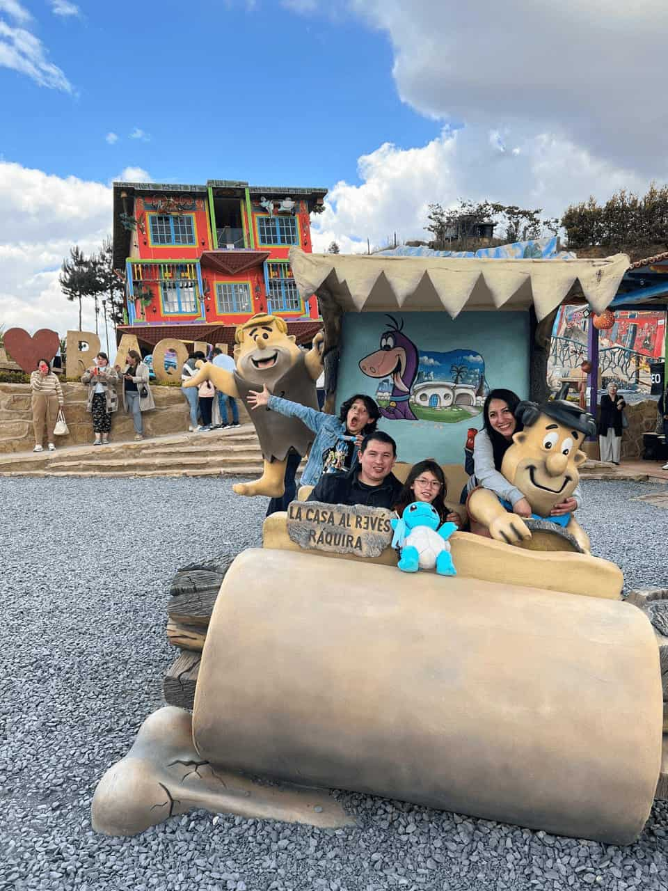

Adriana Sandoval | WDD 130
Hi!
I'm Adriana Sandoval Salamanca. I'm 39 years old. I served a full-time mission in the
Peru Lima Central Mission when I was 25. I returned home 13 years ago, and four months
later I married a man who is very dedicated to the gospel and who encourages me to be
better. That's why I've started studying again, even at my age.
We have two children, a boy and a girl. Unfortunately, due to health problems, I
couldn't have any more children, but we are still happy amidst life's challenges. I
really enjoy watching movies with them, laughing, and playing; those are my favorite
moments.
This is a path that, although difficult for me, I feel I will be able to complete my
studies this time.